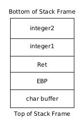

All the content on this website, including this post, is intended for educational use only. The techniques and processes presented should only be used against systems you own or have explicit written permission to target. Otherwise, you are breaking the Law - be smart. The author/s of this website will not accept any liability for misuse of this content.
Before we start having some fun we need to lay some groundwork. In the next series of tutorials, we will be working on Intel x86 architecture and the operating system will be Linux. Since we will be exploiting insecure programs we need to know more about how programs work.
How does a program work?
When a program is executed it is laid out in an organised manner in memory (RAM). The operating system will assign space in memory where the program will be loaded. This address space will include all the instructions to be executed by the program and any data used during execution.
Next data from the program is loaded into the address space. There are three sections:
- .text - read-only data which holds the programs instructions. The data is read-only as none of the program instructions needs to be altered during execution.
- .bss - holds static uninitialised data, aka static variables that initially have no value. This section is writeable.
- .data - holds static initialised data. This section is writeable.
Finally, the Stack and the Heap are initialised
The Stack is Last In First Out (LIFO) data structure. This means that the most recent item put, or pushed, on the Stack is the next item to be removed, or popped, from the Stack. The Stack grows downward; data is added to the Stack as lower addresses. The Stack stores local variables, functions (including the corresponding local variables) and other data used to ‘clean up’ the stack after a function has executed. We will go over the Stack in more detail later.
The Heap is a First In First Out (FIFI) data structure. Data is placed and removed as the Heap grows. Unlike the Stack the Heap grows upward; data is added at higher address values. The Heap is not managed automatically for you - the programmer has to take more responsibility for data on the Heap. Unlike the Stack, data written onto the Heap can be accessed by any function. Variables on the heap are essentially global.
Sections of a program loaded into memory.
The Stack
Data is written onto the Stack using the Assembly Push command. Data is removed from the Stack using the Assembly Pop command. For example,
This sequence of commands will put the value 1 onto the top of the Stack. Then the value on the top of the stack, in this case 1, is copied into EAX. A subtlety to note is the data is not moved from its previous memory. It is still there in memory, but the program no longer considers this portion of the memory part of Stack. To appreciate this we need to understand what the ESP register does.
The Extended Stack Pointer points to the memory location on the top of the Stack. Let us see how this works for our example.
The value 1 is pushed to the Stack.
Once the value 1 has been pushed onto the Stack the ESP points to this memory address which stores the value 1. This makes sense as the value 1 is on the top of the Stack.
1 is popped off the Stack. Notice how the value is not deleted but rather the Stack pointer is no longer pointing to it.
Once the value 1 has been popped off the Stack (and into EAX) the ESP still needs to point to the top of the Stack. However, the size of the Stack has decreased by 4 bytes (the size of memory used to store the value 1) from the top of the Stack. This means that the ESP has to increment by 4 so it points to the next memory address above the address that 1 is stored in (remember the Stack grows downward so shrinks upward). Now the ESP points to the top of the Stack. Notice how the value 1 still resides in the same location in memory despite not being on the Stack anymore.
Stack Frames and Functions
The Stack is used extensively to handle function calls. A function call alters the programs execution flow so a set of predefined instructions, known as the function, can be called. Once the function has executed it returns to the original location from which it was called. When a function is called all the data required by that function, such as local variables, are written onto the Stack as well as data that will ensure the program can resume execution after the function has executed.
This is best understood by looking at an example. In this example, we call a simple function called function, which has the parameters integer1 and integer2.
A simple program with one function call.
Firstly the parameters integer1 and integer2 are pushed onto the Stack (they are written in backward). Once the parameters are on the Stack the return address (RET) is pushed onto the Stack. RET is the value stored in the EIP register when the function is called. In this case, the address of the first printf statement will be pushed onto the Stack.
Before the function can be executed, the prolog is executed. The value of EBP is pushed onto the Stack as the EBP register must be used by the function to reference values in its Stack frame. Once the function has completed, we will need the current value of EBP to reference values in main().
The final thing for the prolog to do is to calculate and assign space on the Stack for all the function's local variables. In this case that's the array, we declare called buffer. This is what the Stack frame looks like now.
The function's Stack frame has been written onto the Stack. The program is now ready to execute the function.
After the function's Stack frame has been written onto the Stack the function is ready to be executed.
The Stack now looks like this with the function's Stack frame loaded at the bottom of the Stack.
Overflowing Buffers on the Stack
When programming in languages such as C which pass the responsibility of memory management over to the programmer one must be careful that they do not try and copy more data into a buffer than it can hold. This can cause the program to overwrite other data on the Stack, such as other variables and the RET value, which was not the intention of the programmer.
To quote "Smashing The Stack For Fun and Profit", a buffer is “a contiguous block of computer memory that holds multiple instances of the same data type”. As we have seen "static variables are allocated at load time in the data segment" whilst dynamic variables are “allocated at runtime on the stack”. We will concern ourselves with overflowing dynamic variables which are located on the Stack.
We will proceed by way of an example.
This program has a buffer overflow bug as we shall soon see.
This program takes input from standard input (in this case a commandline argument). The program calls the function check_password. This function declares several variables including a character array called pass_buffer which has a length of 10 characters. The function then copies the user input specified from the commandline into the pass_buffer variable. The function then compares the value of pass_buffer and actual_pass ("hacker") and returns 1 if they match. The program then logs you in if the function a value which is not 0 (the user input matches the actual password). Let's see this in action. Firstly we compile the C program, disabling stack protections!
gcc -g -o login login.c -fno-stack-protector
The problem is that when the user input is copied into buffer pass_buffer there are no checks to ensure that the user input can fit into the pass_buffer. The program should check that the length of the user input is less than or equal 10. But no such checks are made. This means that we should be able to write outside the memory allocated to the pass_buffer array. Let's see what happens when we specify a password of length 10 and then length 11.
We've caused a buffer overflow in our program and managed to login without a valid password.
As we can see when the password is larger than the buffer it's being copied to we are logged in by the program. Let's see what's happening here. We will debug the program using a commandline debugger called gdb.
debug@lbuntu:~/Documents/exploitdev/chapter2/stack$ gdb -q ./login Reading symbols from ./login...done. (gdb) list 1
We set breakpoints at the strcpy instruction, before data is written to the buffer, and before the value auth is returned by the function.
(gdb) break 10 Breakpoint 1 at 0x60a: file login.c, line 10. (gdb) break 16 Breakpoint 2 at 0x63a: file login.c, line 16. (gdb)
We then run the program with user input of length 11 to hopefully overwrite the pass_buffer buffer.
(gdb) run AAAAAAAAAAA Starting program: /home/debug/Documents/exploitdev/chapter2/stack/login AAAAAAAAAAA Breakpoint 1, check_password (userpass=0xbffff749 'A' repeats 11 times) at login.c:10 10 strcpy(pass_buffer, userpass); (gdb) x/32xw $esp 0xbffff4e0: 0x00000009 0xbffff713 0x6b636168 0x00007265 0xbffff4f0: 0xb7fb0000 0xb7fba000 0x00000000 0x00000000 (*) 0xbffff500: 0xb7fba3fc 0x00401fc8 0xbffff528 0x00400696 0xbffff510: 0xbffff749 0xbffff5d4 0xbffff5e0 0x00400656 0xbffff520: 0xbffff540 0x00000000 0x00000000 0xb7dfae91 0xbffff530: 0xb7fba000 0xb7fba000 0x00000000 0xb7dfae91 0xbffff540: 0x00000002 0xbffff5d4 0xbffff5e0 0xbffff564 0xbffff550: 0x00000002 0xbffff5d4 0xb7fba000 0xb7fe778a (gdb)
We encounter our first breakpoint, before our input is copied to the Stack. Examining the contents of memory after the ESP pointer we see that our user input has not yet been written onto the Stack. If it had we would see the \x41 hexadecimal character repeated eleven times. This is the ASCII value of ‘A’. We can confirm our hunch by viewing the contents of pass_buffer, which will just be random data. We will also see what the auth variable is. It should be zero based on the C program logic. We can see the value of auth on the Stack at (*).
(gdb) x/s pass_buffer 0xbffff4f2: incomplete sequence \373\267 (gdb) x/x &auth 0xbffff4fc: 0x00
As expected the pass_buffer contains unitalised data as we have not yet copied our user input to this buffer. The auth variable has a value of zero, which was set at the start of the function.
Continuing the execute of the program brings us to our next breakpoint just as the function returns to main. Examining the function's Stack frame once more.
(gdb) continue Continuing. Breakpoint 2, check_password (userpass=0xbffff749 'A' repeats 11 times) at login.c:16 16 return auth; (gdb) x/32xw $esp 0xbffff4e0: 0x00000009 0xbffff713 0x6b636168 0x00007265 0xbffff4f0: 0x41410000 0x41414141 0x41414141 0x00000041 (**) 0xbffff500: 0xb7fba3fc 0x00401fc8 0xbffff528 0x00400696 0xbffff510: 0xbffff749 0xbffff5d4 0xbffff5e0 0x00400656 0xbffff520: 0xbffff540 0x00000000 0x00000000 0xb7dfae91 0xbffff530: 0xb7fba000 0xb7fba000 0x00000000 0xb7dfae91 0xbffff540: 0x00000002 0xbffff5d4 0xbffff5e0 0xbffff564 0xbffff550: 0x00000002 0xbffff5d4 0xb7fba000 0xb7fe778a
We indeed see that our buffer of A's has been written into the Stack from 0xbffff4f2 to 0xbffff4fC (highlighted in bold). 11 characters have been written onto the Stack despite the fact that only 10 bytes were allocated by the program for the pass_buffer array. Let's view the contents of both pass_buffer and auth.
(gdb) x/s pass_buffer 0xbffff4f2: 'A' repeats 11 times (gdb) x/x &auth 0xbffff4fc: 0x41 (gdb)
pass_buffer is 11 characters long. We have successfully overflowed the buffer (of length 10) and overwritten other parts of the Stack frame. But where did we write exactly? Strangely the auth variable has a value of \x41 or 65 in decimal. This is odd since in the C code the auth is only ever set to 0 or 1. It is, in fact, \x41 as we overwrote the memory allocated to the auth variable when we overflowed the pass_buffer buffer. The 11th byte of our input with value \x41 replaced the first byte of the 4 bytes allocated to auth. We can see this on the Stack at (**). This means we effectively wrote the pass_buffer value to “AAAAAAAAAAA” (Ax11) and auth to 65 (\x41 in hexadecimal). (Note that the pass_buffer character array does not terminate after 10 bytes as arrays terminate when they encounter a null byte \x00).
This means the function will return a value of 65 to main. Since the main function will log us in if the returned value is not zero we are logged into the program.
(gdb) continue Continuing. Login Success [Inferior 1 (process 13799) exited normally] (gdb)
The buffer overflow vulnerability allowed us to alter the logic of the program and log us in without a valid password. Hopefully, this demonstrates how powerful and dangerous these bugs can be. In the next post, we will look at more sinister exploits that aim to execute arbitrary code on the target system rather than just log us into an application. This will give us access to the underlying operating system.
References:
[1] "Smashing The Stack For Fun and Profit", https://inst.eecs.berkeley.edu/~cs161/fa08/papers/stack_smashing.pdf
[2] seedstudio, https://www.seeedstudio.com/blog/2020/
[3] Techterms, https://techterms.com/definition/register